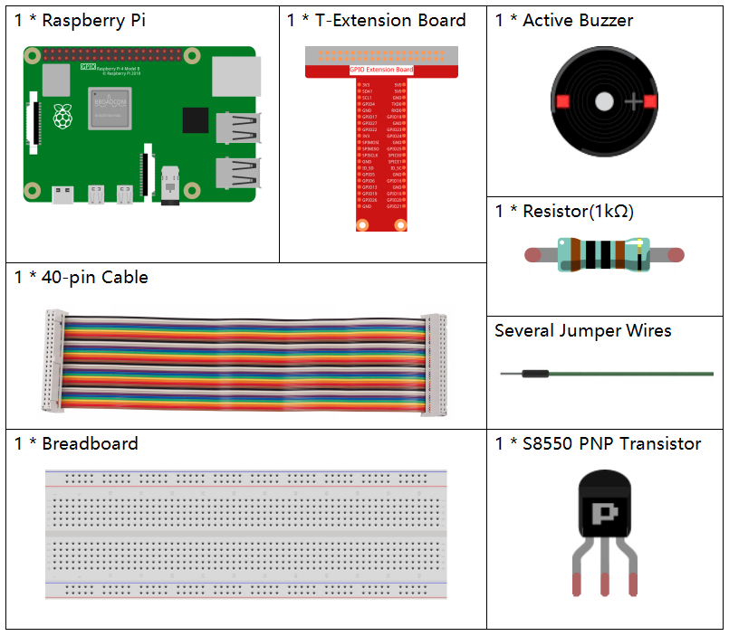

Nota
Ciao, benvenuto nella SunFounder Raspberry Pi & Arduino & ESP32 Enthusiasts Community su Facebook! Approfondisci le tue conoscenze su Raspberry Pi, Arduino ed ESP32 insieme ad altri appassionati.
Perché unirsi a noi?
Supporto esperto: Risolvi problemi post-vendita e sfide tecniche con l’aiuto della nostra community e del nostro team.
Impara e condividi: Scambia consigli e tutorial per migliorare le tue competenze.
Anteprime esclusive: Accedi anticipatamente alle nuove presentazioni di prodotti e anteprime esclusive.
Sconti speciali: Approfitta di sconti esclusivi sui nostri nuovi prodotti.
Promozioni festive e omaggi: Partecipa a promozioni speciali e concorsi durante le festività.
üëâ Sei pronto per esplorare e creare insieme a noi? Clicca [Qui] e unisciti subito!
1.2.1 Buzzer Attivo
Introduzione
In questa lezione impareremo a far suonare un buzzer attivo tramite un transistor PNP.
Componenti
Principio
Buzzer
Il buzzer è un tipo di dispositivo sonoro elettronico con una struttura integrata, alimentato in corrente continua (DC). È ampiamente usato in computer, stampanti, fotocopiatrici, allarmi, giocattoli elettronici, dispositivi elettronici per auto, telefoni, timer e altri dispositivi elettronici o sonori. I buzzer possono essere di due tipi: attivi e passivi (vedi immagine seguente). Capovolgendo il buzzer con i pin rivolti verso l’alto, noterai che quello con una scheda verde è passivo, mentre quello avvolto in nastro nero è attivo.
La differenza tra un buzzer attivo e uno passivo:

La differenza principale è che un buzzer attivo ha una sorgente oscillante integrata e quindi emette un suono quando viene alimentato. Un buzzer passivo, invece, richiede segnali in forma d’onda quadra con una frequenza tra 2K e 5K per funzionare, in quanto privo di sorgente oscillante interna. Di solito, il buzzer attivo è più costoso a causa della sua struttura interna.
Di seguito trovi il simbolo elettrico di un buzzer. Ha due pin con polarità positiva e negativa. Il simbolo + sulla superficie rappresenta l’anodo, mentre l’altro pin è il catodo.

Puoi riconoscere i pin del buzzer: il pin più lungo è l’anodo, mentre il più corto è il catodo. È importante non invertire le polarità per evitare che il buzzer non emetta suono.
Schema Elettrico
In questo esperimento, usiamo un buzzer attivo, un transistor PNP e una resistenza da 1k tra la base del transistor e il GPIO per proteggerlo. Quando il GPIO17 del Raspberry Pi è impostato a basso livello (0V) tramite il programma, il transistor entra in conduzione a causa della saturazione di corrente, facendo suonare il buzzer. Al contrario, quando il GPIO è impostato a livello alto, il transistor si spegne e il buzzer smette di suonare.

Procedura Sperimentale
Passo 1: Monta il circuito. (Fai attenzione ai poli del buzzer: il pin con l’etichetta + è il polo positivo, mentre l’altro è il polo negativo.)

Per Utenti del Linguaggio C
Passo 2: Apri il file del codice.
cd ~/davinci-kit-for-raspberry-pi/c/1.2.1/
Passo 3: Compila il codice.
gcc 1.2.1_ActiveBuzzer.c -lwiringPi
Passo 4: Esegui il file eseguibile.
sudo ./a.out
Eseguito il codice, il buzzer emetterà un suono.
Nota
Se, dopo aver eseguito il codice, non funziona o appare un messaggio di errore: «wiringPi.h: No such file or directory», fai riferimento a Il codice C non funziona?.
Codice
#include <wiringPi.h>
#include <stdio.h>
#define BeepPin 0
int main(void){
if(wiringPiSetup() == -1){ //se l'inizializzazione di wiring fallisce, stampa un messaggio a schermo
printf("setup wiringPi failed !");
return 1;
}
pinMode(BeepPin, OUTPUT); //imposta GPIO0 come output
while(1){
//attiva il buzzer
printf("Buzzer on\n");
digitalWrite(BeepPin, LOW);
delay(100);
printf("Buzzer off\n");
//spegni il buzzer
digitalWrite(BeepPin, HIGH);
delay(100);
}
return 0;
}
Spiegazione del Codice
digitalWrite(BeepPin, LOW);
In questo esperimento utilizziamo un buzzer attivo, che emette automaticamente un suono quando collegato alla corrente continua. Questo sketch imposta la porta I/O a livello basso (0V), gestendo così il transistor per far suonare il buzzer.
digitalWrite(BeepPin, HIGH);
Impostando la porta I/O a livello alto (3,3V), il transistor non viene alimentato e il buzzer non emette suono.
Per Utenti del Linguaggio Python
Passo 2: Apri il file del codice.
cd ~/davinci-kit-for-raspberry-pi/python
Passo 3: Esegui.
sudo python3 1.2.1_ActiveBuzzer.py
Eseguito il codice, il buzzer emetterà un suono.
Codice
Nota
Puoi Modificare/Reimpostare/Copiare/Eseguire/Arrestare il codice qui sotto. Prima di farlo, devi accedere al percorso del codice sorgente come davinci-kit-for-raspberry-pi/python.
import RPi.GPIO as GPIO
import time
# Imposta il pin #17 come pin del buzzer
BeepPin = 17
def setup():
# Imposta le modalità GPIO con la numerazione BCM
GPIO.setmode(GPIO.BCM)
# Imposta il pin del Led come output e il livello iniziale su High (3.3v)
GPIO.setup(BeepPin, GPIO.OUT, initial=GPIO.HIGH)
def main():
while True:
# Accensione del Buzzer
print ('Buzzer On')
GPIO.output(BeepPin, GPIO.LOW)
time.sleep(0.1)
# Spegnimento del Buzzer
print ('Buzzer Off')
GPIO.output(BeepPin, GPIO.HIGH)
time.sleep(0.1)
def destroy():
# Spegne il buzzer
GPIO.output(BeepPin, GPIO.HIGH)
# Rilascia le risorse
GPIO.cleanup()
# Se esegui questo script direttamente, avvia:
if __name__ == '__main__':
setup()
try:
main()
# Quando viene premuto 'Ctrl+C', viene eseguita la funzione destroy()
except KeyboardInterrupt:
destroy()
Spiegazione del Codice
GPIO.output(BeepPin, GPIO.LOW)
Imposta il pin del buzzer a livello basso per far emettere suono al buzzer.
time.sleep(0.1)
Attendi 0,1 secondi. Modifica la frequenza di commutazione cambiando questo parametro.
Nota
Non si tratta della frequenza del suono. Il buzzer attivo non può cambiare la frequenza del suono.
GPIO.output(BeepPin, GPIO.HIGH)
Spegne il buzzer.
Immagine del Fenomeno